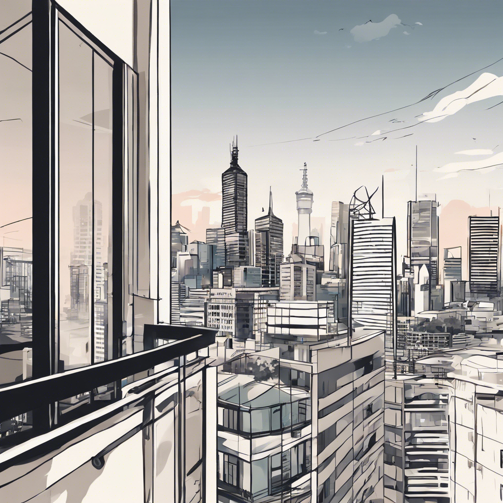

Across the World and Back to Myself

Why asking ‘Am I happy?’ became my compass in a year of self-discovery and big moves
I was filling out an assessment as part of a job application the other day. It asked “What is one important truth that you live by?”. I thought about it. I tried to be witty; I tried to be smart. What came to me in the end was something I had thought about a couple of nights before as I sat on my balcony looking into the towering high rises of Melbourne’s business district.
I’ve only been in Melbourne a little over a month. It was a harder transition than I expected; it was a much more expensive transition than I expected. I was starting from scratch more or less; I had spent the past two and a half months living on an island where flip flops were optional and a bathing suit was the only staple I needed.
But just last week, I bought my first pair of jeans—a real sign of settling down if you ask me.
Coming to Australia was never the plan. If you find yourself backpacking around SE Asia, though, everyone will tell you to head Down Under if you find yourself short on cash or craving the comforts of a westernized city. So, after about four months of living from a backpack, I hit up a friend from college that I knew was in Melbourne and she offered her extra bedroom in her flat as a place to crash.
It’s been nice. It’s new and exciting. I’ve never lived right in the center of a city before and ever since I was young, I always wanted to. However, from my very limited experience, Melbourne is quite similar to San Francisco: vibrant yet gritty, where liberal ideas and edgy styles of jorts and rugged haircuts reign. It's sunny and has similar flora. It’s a city right by the bay.
So sometimes I ask myself, if this is the experience I am getting, why do I need to be all the way across the world from my friends and family? Could I not just be doing what I’m doing there?
And maybe I could be. But I have to keep the bigger picture in mind, which is that this is just a short period of a couple of months before I start traveling once again.
I’m not really a believer in right or wrong choices—I mean sure, to some extent in regards to the morality of things, but not about whether it was the ‘right or wrong’ choice to move to Australia. I think it was just a choice I decided to make, and the means by which to evaluate the choice can be boiled down to a simple question: “am I happy?”
Take big risks. Continuously ask yourself, “am I happy?”. If the answer is no, change something. If the answer is yes, enjoy the ride.
I am not following the path of a parent or an older sibling, not of a friend or a teacher. I’m making it up as I go—and sometimes leaving it up to chance (when I find myself at an impasse with two great options on either side—for example deciding whether Thailand or Indonesia would be next after my month in Vietnam—, I’ll flip a coin and leave it up to the universe).
There’s no end goal here. I am just trying to experience this life to its fullest. The way that I keep myself in check is by continuously asking: am I happy?
Sure there are days that might not be so wonderful. There are days I am lonely and I wish I could see my college friends, or snuggle with my dogs, or sit with my grandparents. But at this moment in my life, I feel like I’m on the cusp of understanding. Everyday I am reading and learning and getting closer to being able to figure out what really makes me happy, what excites me and where my priorities lie. I am getting a sense of direction about where I want to take my life professionally, how the world works, and how to write my own definition of success.
And at the moment what success means to me is that I am happy. Not just a fleeting notion of happiness or excitement or adrenaline, but a deeper sort of contentment. A contentment where I am at peace with myself, my body, my thoughts, choices and emotions. I have nothing but time on my hands, and I have to—get to—choose the way that I want to fill it. This requires honesty with myself, because if I end the day feeling like I’ve wasted time, I have only myself to blame.
And if I’m to blame, then I must change. By continuously asking myself whether I am happy, I know precisely when I am not, and exactly when the answer shifted from a yes to a no. That's when I know it’s time for a change.
“If something can be done about the situation, what need is there for dejection? And if nothing can be done about it, what use is there for being dejected?”
— Buddhist master Shantideva
Towards the end of my time in Indonesia, there had been days where I wanted to say screw it, buy a flight, and go home. I was tired of traveling, I was tired of trying to learn Bahasa, I was so tired of nasi goreng. But then, if I wanted to go home, I had to ask myself where home was. Most recently it had been Berkeley, CA, but it wasn’t like I was going to move back to my college town. My brother and my mom just moved out to Boston, but Boston doesn’t at all feel like home to me—and it’s about to be winter and I hate the cold. My dad still lives in Ohio, but I knew moving to Ohio wasn’t going to make me any happier. Going back to Ohio felt like defeat. I lived there for eighteen years and I knew by the time I was about twelve that I never wanted to live there again. There are too many other beautiful places in this world to settle for the midwest (I admit my privilege when I say this and I acknowledge that this is only my own opinion).
So I took a risk and moved to Australia. I applied for a working-holiday visa which requires you have at least $3k in your bank account and I had just about that.
Ben Horowitz talks about his decision to take Opsware public: "This is not checkers; this is motherfucking chess. Technology businesses tend to be extremely complex. The underlying technology moves, the market moves, the people move. As a result, like playing three dimensional chess on Star Trek”, there is always a move. You think you have no moves? How about taking your company public with $2 million in trailing revenue and 340 employees, with a plan to do $75 million in revenue the next year? I made that move. I made it in 2001, widely regarded as the worst time ever for a technology company to go public. I made it with six weeks of cash left. There is always a move."
I was on the other side of the world, I was alone, I was tired of backpacking, I had no obvious next move, but I decided to bet on myself and make the move. And after the plane ticket to get myself out there, I made the decision with about six weeks of cash left. Taking a big risk, or making a big move is hard, but staying in a situation where you aren't happy is harder.
I am making it work. Am I happy while I’m doing it? To my surprise, I find myself repeatedly answering with a resounding yes. So I guess I will keep at it.